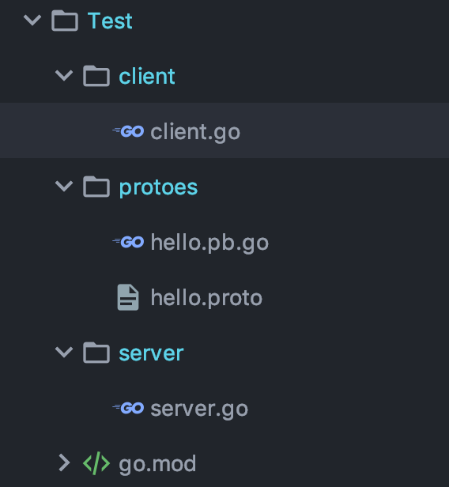

一 grpc
1.1 grpc概念
grpc是Google开源的rpc实现，基于最新的HTTP2.0协议，并支持常见的众多编程语言。
与许多RPC系统类似，gRPC里客户端应用可以像调用本地对象一样直接调用另一台不同的机器上服务端应用的方法，使得开发者能够更容易地创建分布式应用和服务。
gRPC理念:
- 定义一个服务，指定其能够被远程调用的方法(包含参数和返回类型)。
- 在服务端实现这个接口，并运行一个gRPC服务器来处理客户端调用。
gRPC客户端和服务端可以在多种环境中运行和交互，并且可以用任何 gRPC 支持的语言来编写。所以，开发者可以很容易地用 Java 创建一个 gRPC 服务端，用 Go、 Python、Ruby来创建客户端。
1.2 GRPC 与 protocol buffers
gRPC默认使用protoBuf，这是 Google 开源的一套成熟的结构数据序列化机制(当然也可以使用其他数据格式如 JSON )。
二 go搭建 grpc helloworld
2.0 项目结构

2.1 设置proto文件
创建文件：server/protoes/hello.proto server是go mod的模块名
syntax = "proto3";
package protoes;
service HelloServer{
rpc SayHi(HelloRequest)returns(HelloReplay){}
rpc GetMsg(HelloRequest)returns(HelloMessage){}
}
message HelloRequest{
string name = 1 ;
}
message HelloReplay{
string message = 1;
}
message HelloMessage{
string msg = 1;
}
在protoes文件所在的文件夹输入下面命令，生产pb.go文件:
protoc --go_out=plugins=grpc:. *.proto
2.1 服务端
package main
import (
"fmt"
"context"
"google.golang.org/grpc"
"net"
pb "test/protoes"
)
// 对象要和proto内定义的服务一致
type server struct{
}
// 实现rpc的 SayHi接口
func(s *server)SayHi(ctx context.Context, in *pb.HelloRequest) (*pb.HelloReplay, error){
return &pb.HelloReplay{
Message: "Hi " + in.Name,
}, nil
}
// 实现rpc的 GetMsg接口
func(s *server)GetMsg(ctx context.Context, in *pb.HelloRequest) (*pb.HelloMessage, error){
return &pb.HelloMessage{
Msg: "Server msg is coming...",
}, nil
}
func main() {
// 监听网络
ln, err := net.Listen("tcp", "127.0.0.1:3000")
if err != nil {
fmt.Println("网络异常：", err)
return
}
// 创建grpc句柄
srv := grpc.NewServer()
// 将server结构体注册到grpc服务中
pb.RegisterHelloServerServer(srv, &server{})
// 监听服务
err = srv.Serve(ln)
if err != nil {
fmt.Println("监听异常：", err)
return
}
}
2.2 客户端
package main
import (
"fmt"
"context"
"google.golang.org/grpc"
pb "test/protoes"
)
func main() {
// 客户端连接服务器
conn,err := grpc.Dial("127.0.0.1:3000", grpc.WithInsecure())
if err != nil {
fmt.Println("连接服务器失败",err)
}
defer conn.Close()
// 获得grpc句柄
c := pb.NewHelloServerClient(conn)
// 远程单调用 SayHi 接口
r1, err := c.SayHi(
context.Background(),
&pb.HelloRequest{
Name: "Kitty",
},
)
if err != nil {
fmt.Println("Can not get SayHi:", err)
return
}
fmt.Println("SayHi 响应：", r1)
// 远程单调用 GetMsg 接口
r2, err := c.GetMsg(
context.Background(),
&pb.HelloRequest{
Name: "Kitty",
},
)
if err != nil {
fmt.Println("Can not get GetMsg:", err)
return
}
fmt.Println("GetMsg 响应：", r2)
}
2.3 测试
依次进入server与client文件夹，执行：
go run server.go
go run client.go
客户端输出结果：
SayHi 响应： message:"Hi Kitty"
GetMsg 响应： msg:"Server msg is coming..."